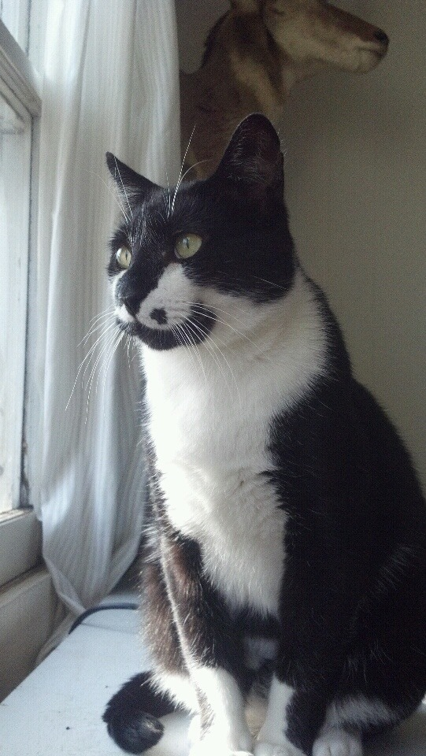

A tuxedo cat is a bicolor cat with a white and black coat. They are called "tuxedo" cats because the animal appears to be wearing the type of black tie formal wear commonly known in the United States and Canada as a tuxedo. The tuxedo pattern is not limited to the color black, but the name is typically reserved for black and white cats. Most tuxedo cats are also black mask cats, a common name for felines who, due to their facial coloration, look as if they are wearing a black mask over their eyes, and often over their entire head. To be considered a true tuxedo cat, the feline's coloring should consist of a solid black coat, with white fur limited to the paws, belly, chest, throat, and often the chin, although many tuxedo cats appear to sport goatees, due to the black coloration of their mandible—that is, the lower jaw and chin. Bicolor may also appear in the skin color. Paw pads may be black or pink, often matching the coat in that area; if the color boundary crosses the underside of the paw, the pads on either side may be different colors or even bicolored. Bicoloring of the nose and mouth are also common.
References:
This article uses material from the Wikipedia article ”Bicolor cat", which is released under the Creative Commons Attribution-Share-Alike License 3.0
Picture: By Throckm6 (Own work) [CC BY-SA 4.0], via Wikimedia Commons